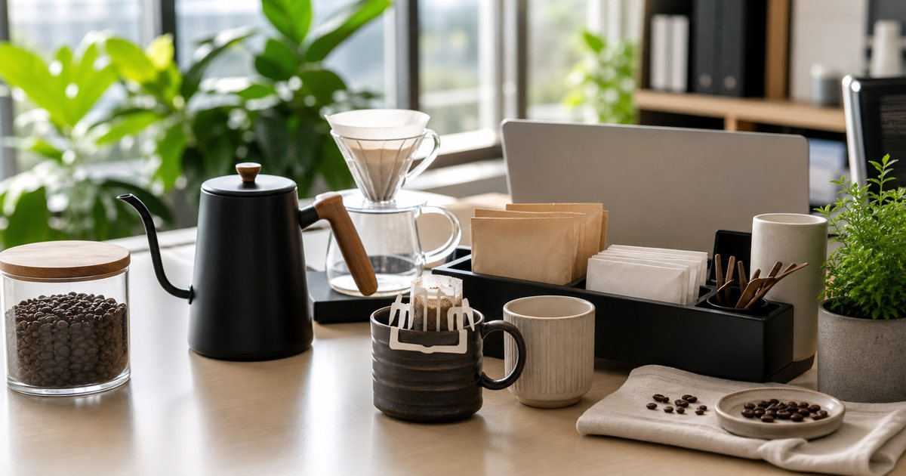

Elite Fashion｜忙碌日常的辦公室咖啡補給：咖啡豆、濾掛與掛耳包怎麼選
辦公室咖啡不只看風味，也要看沖煮時間、收納、共用情境與送禮體面。從咖啡豆、濾掛到器具，整理更穩的選擇順序。

先分清楚：個人杯、共用補給，還是待客咖啡
咖啡進辦公室之後，第一個問題不是豆子產區，而是誰會喝、在哪裡沖、要不要分享。個人杯可以偏向自己喜歡的烘焙度；共用補給要更穩定、容易保存；待客咖啡則要兼顧包裝與不易出錯的風味。
可以把 歐力咖啡、Xinto Coffee、馬克老爹、LEOBUNA 與 BINCOO 放在同一張選擇表裡，但不要只看品牌名或包裝。編輯部會先看它們各自適合的位置：日常補給、待客分享、送禮、備餐、移動攜帶或辦公室共用，再決定哪些值得放進購物清單。
比較實用的順序是先確認 每天沖煮的人數、器具清洗時間與收納位置。常見失誤是 只憑包裝或活動一次買太多，最後喝不完也難保存；在 辦公室茶水間、小型工作室與居家工作角落 裡，選擇能被穩定使用的品項，通常比一次買齊更重要。
- 個人使用可先選小包裝或少量咖啡豆。
- 共用補給要優先看保存、標示與沖煮門檻。
咖啡豆適合固定桌，濾掛適合不確定的日程
如果你有固定磨豆與沖煮時間，咖啡豆能讓日常有更多調整空間；如果你常在會議之間移動，濾掛或掛耳包會更容易維持品質。辦公室不一定需要完整咖啡吧，先找到能持續的方式比較重要。
可以把 歐力咖啡、Xinto Coffee、馬克老爹與 LEOBUNA 放在同一張選擇表裡，但不要只看品牌名或包裝。編輯部會先看它們各自適合的位置：日常補給、待客分享、送禮、備餐、移動攜帶或辦公室共用，再決定哪些值得放進購物清單。
比較實用的順序是先確認 你是否願意每天清潔器具、分裝豆子與控制沖煮時間。常見失誤是 把家用咖啡儀式完整搬到辦公室，卻低估清潔和收納成本；在 共享辦公、顧問工作室與需要快速轉場的日程 裡，選擇能被穩定使用的品項，通常比一次買齊更重要。
- 固定座位可考慮咖啡豆與簡單器具。
- 流動工作者更適合濾掛、掛耳或易收納補給。
器具不是越多越專業，而是越少越容易維持
辦公室咖啡器具要避開「看起來完整、實際很麻煩」的陷阱。手沖壺、濾杯、磨豆機與收納盒都可能提升體驗，但也會增加清潔和桌面管理成本。
可以把 BINCOO、歐力咖啡、馬克老爹與 Xinto Coffee 放在同一張選擇表裡，但不要只看品牌名或包裝。編輯部會先看它們各自適合的位置：日常補給、待客分享、送禮、備餐、移動攜帶或辦公室共用，再決定哪些值得放進購物清單。
比較實用的順序是先確認 沖煮後需要清理的件數，以及茶水間是否有合適位置。常見失誤是 先買器具再想流程，結果每次沖完都像在整理廚房；在 小型辦公室、租屋工作區與開放式茶水間 裡，選擇能被穩定使用的品項，通常比一次買齊更重要。
- 先保留一套最常用器具，其他放備用區。
- 共用器具要有固定清洗與晾乾位置。
下午需要的是穩定感，不一定是更濃的味道
下午的咖啡通常承擔兩種任務：一是重新整理工作節奏，二是讓會議或寫作前有短暫切換。這時候選豆不用追求刺激，反而可以先看是否容易入口、是否適合搭配點心。
可以把 LEOBUNA、馬克老爹、歐力咖啡與 Xinto Coffee 放在同一張選擇表裡，但不要只看品牌名或包裝。編輯部會先看它們各自適合的位置：日常補給、待客分享、送禮、備餐、移動攜帶或辦公室共用，再決定哪些值得放進購物清單。
比較實用的順序是先確認 下午飲用時是否容易搭配牛奶、甜點或單喝。常見失誤是 把每個時段都用同一款深焙咖啡處理，最後只剩下疲乏感；在 需要長時間閱讀、簡報準備與客戶回覆的工作日 裡，選擇能被穩定使用的品項，通常比一次買齊更重要。
- 下午咖啡可選擇風味較穩、失誤率低的品項。
- 若常搭配牛奶，先確認風味是否被稀釋後仍平衡。
送禮型咖啡要看包裝、保存與對方的沖煮條件
咖啡送禮最怕把自己的習慣送給別人。對方如果沒有磨豆機，咖啡豆再好也可能被放到過期；如果對方在辦公室使用，濾掛或掛耳包通常更友善。
可以把 歐力咖啡、馬克老爹、LEOBUNA、BINCOO 與 Xinto Coffee 放在同一張選擇表裡，但不要只看品牌名或包裝。編輯部會先看它們各自適合的位置：日常補給、待客分享、送禮、備餐、移動攜帶或辦公室共用，再決定哪些值得放進購物清單。
比較實用的順序是先確認 收禮者是否有器具、是否常喝黑咖啡、是否需要分送同事。常見失誤是 只看禮盒外觀，沒有考慮實際使用門檻；在 同事升遷、客戶拜訪、工作室開幕與年節拜訪 裡，選擇能被穩定使用的品項，通常比一次買齊更重要。
- 送禮先選低門檻形式，再追求風味細節。
- 若要分送多人，小份量與清楚標示會更實用。
辦公室咖啡採買清單：先日常，再待客，最後才是興趣
最穩的咖啡採買順序，是先補足每天會喝的品項，再準備待客或分享用的選項，最後才擴充興趣型器具。這樣做不會讓茶水間一下子被咖啡工具塞滿，也比較能看出哪些東西真的被使用。
可以把 歐力咖啡、Xinto Coffee、馬克老爹、LEOBUNA 與 BINCOO 放在同一張選擇表裡，但不要只看品牌名或包裝。編輯部會先看它們各自適合的位置：日常補給、待客分享、送禮、備餐、移動攜帶或辦公室共用，再決定哪些值得放進購物清單。
比較實用的順序是先確認 日常消耗速度、保存期限與每週補貨節奏。常見失誤是 一次把咖啡豆、濾掛、器具與禮盒全部買齊，卻沒有使用節奏；在 白領辦公室、顧問團隊與居家工作者的日常補給 裡，選擇能被穩定使用的品項，通常比一次買齊更重要。
- 第一層：每天會喝、容易保存的補給。
- 第二層：客人來訪或同事分享時不失禮的品項。
FAQ
辦公室咖啡該選咖啡豆還是濾掛？
若有固定座位、器具與清潔時間，咖啡豆較有調整空間；若常移動或多人共用，濾掛與掛耳包通常更方便。
咖啡送禮最容易忽略什麼？
最容易忽略對方是否有沖煮器具與保存條件。送禮時先降低使用門檻，比只追求特殊風味更穩妥。
辦公室要不要買很多咖啡器具？
不一定。先確認每天真的會用到的器具，再慢慢補齊；器具太多反而容易造成清洗與收納負擔。
下一步建議
如果你正在整理辦公室咖啡補給，可以先從日常豆款、濾掛與簡單器具三個方向開始。
重要警語
本文為一般咖啡與辦公室補給情境整理，不構成個別產品測試或口味保證。咖啡因攝取需依個人狀況調整，價格、規格、活動與庫存請以商品頁公告為準。
本文含品牌／商品導購連結；若你透過部分商品連結前往選購，Elite Fashion 可能取得合作收益。本文仍以編輯判斷與使用情境整理為主，價格、規格、活動與庫存請以商品頁公告為準。